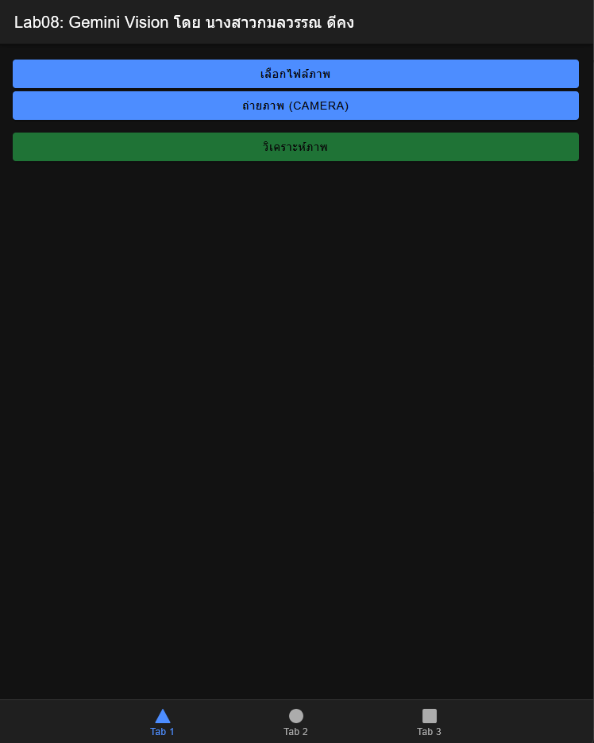
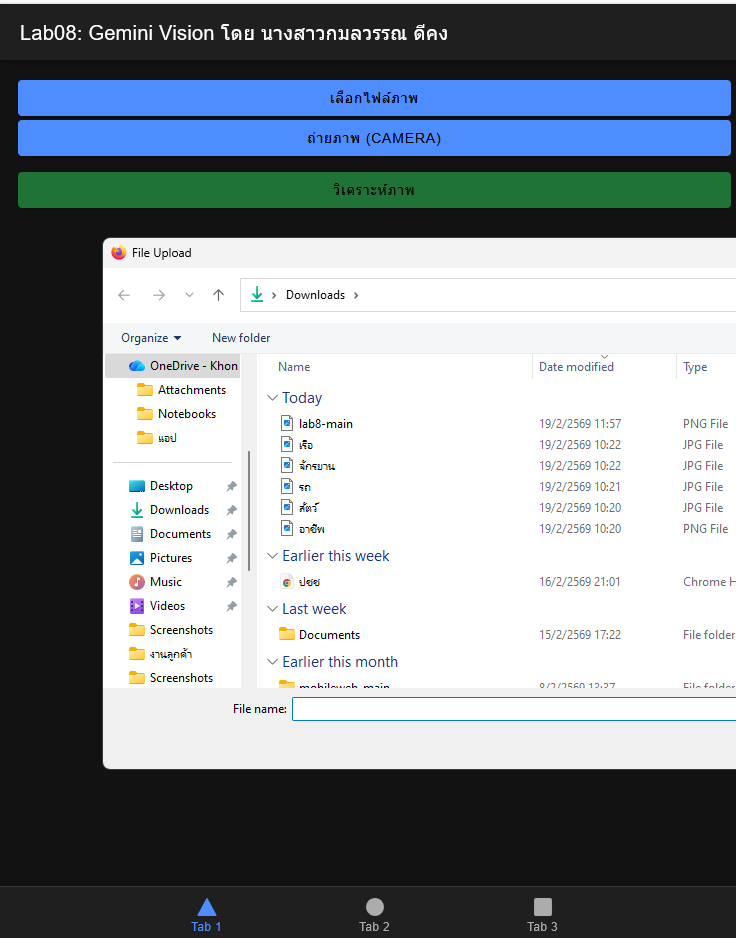
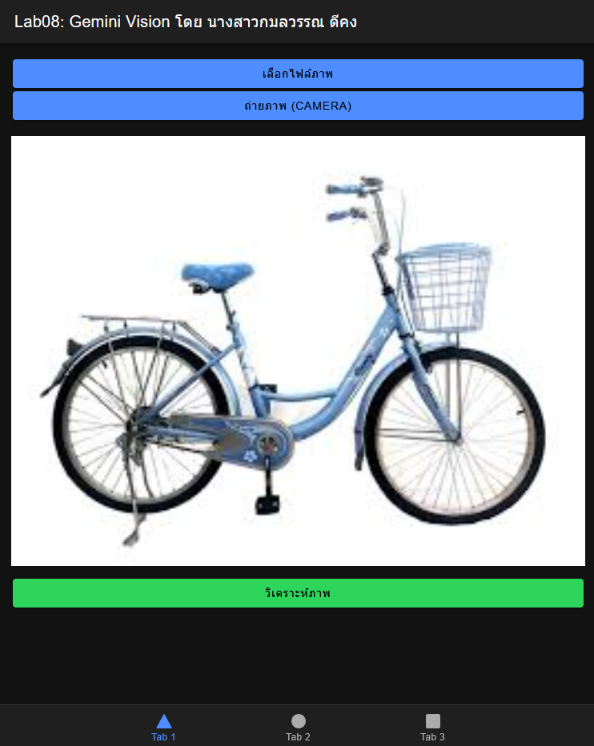
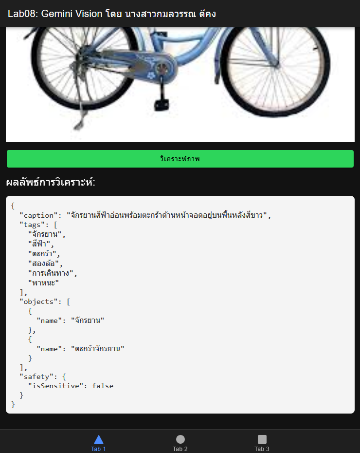

1. หน้าจอหลัก (User Interface)

แสดงปุ่ม "เลือกไฟล์ภาพ" และ "ถ่ายภาพ (Camera)" พร้อม UI ที่ออกแบบ
2. การเลือกรูปภาพ (Image Selection)
เลือกจากไฟล์

ตัวอย่างการเลือกไฟล์รูปภาพจากเครื่อง
แสดงตัวอย่าง (Preview)

รูปภาพที่ถูกเลือกแสดงผลบนหน้าจอแอป
3. ผลลัพธ์การวิเคราะห์จาก Gemini (JSON Output)

แสดงผลลัพธ์ JSON (Caption, Tags, Objects) ที่ได้จาก Firebase AI Logic